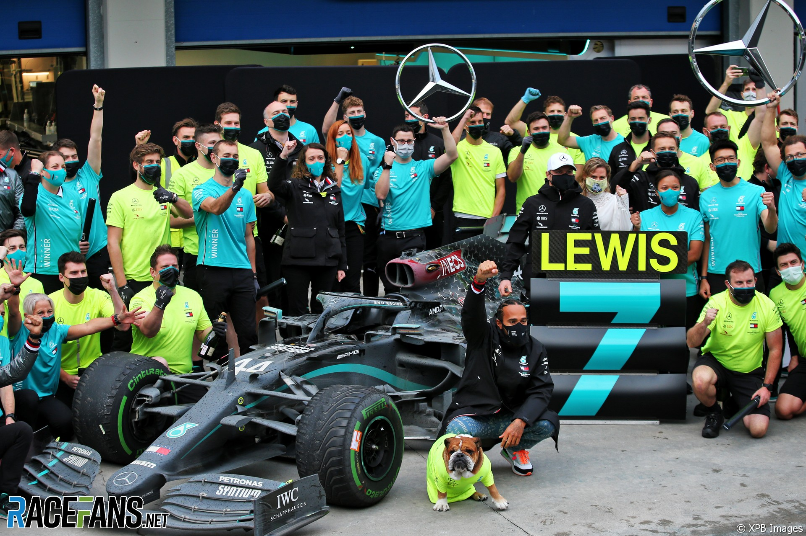
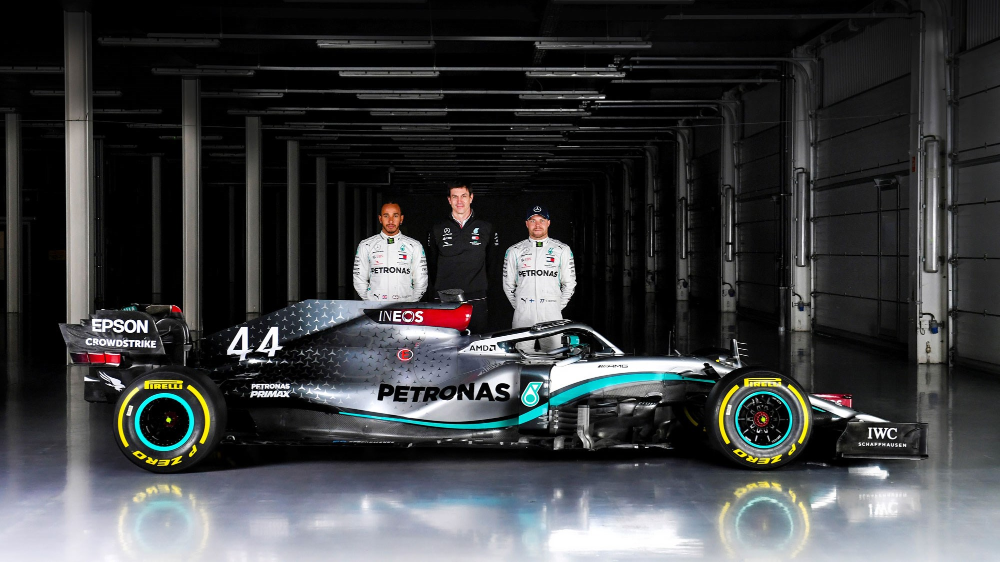
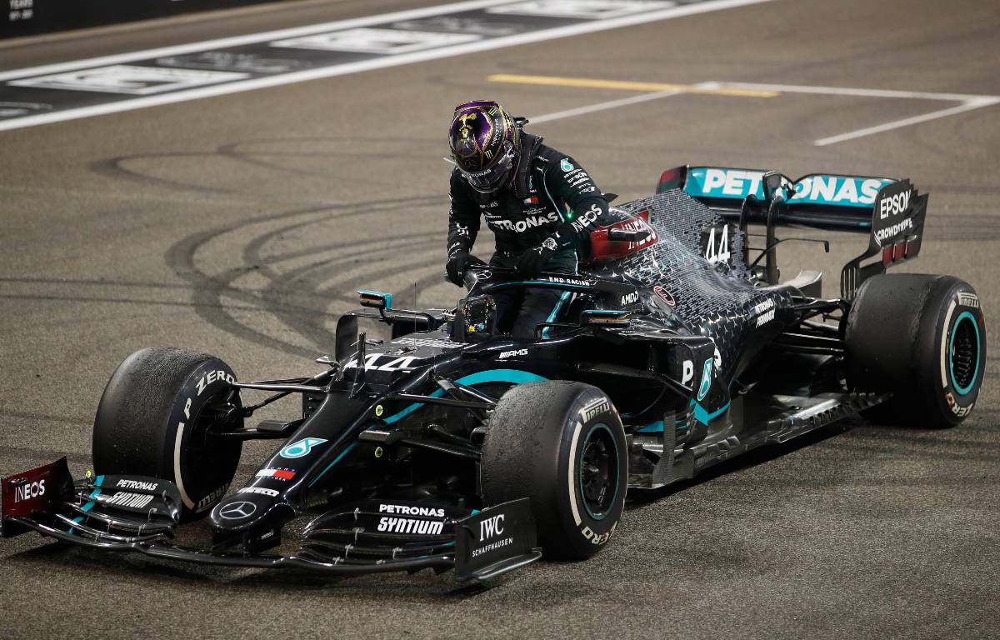
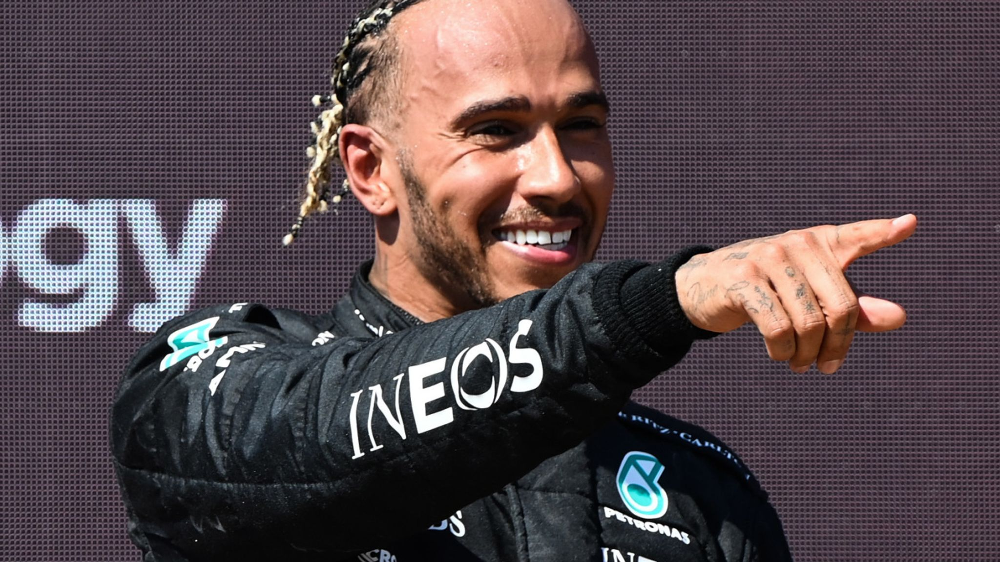

A major rule shake-up in 2014 saw the 2.4-liter naturally-aspirated V8 engines replaced by 1.6-liter turbocharged hybrid power units. This prompted Honda to return to the sport in 2015 as the championship's fourth engine manufacturer. Mercedes emerged as the dominant force after the rule shake-up, with Lewis Hamilton winning the championship closely followed by his main rival and teammate, Nico Rosberg, with the team winning 16 out of the 19 races that season. In 2015, Ferrari was the only challenger to Mercedes, with Vettel taking victory in the three Grands Prix Mercedes did not win.
HYBRID ERA:- Beginning of dominance by the Mercedes Team



